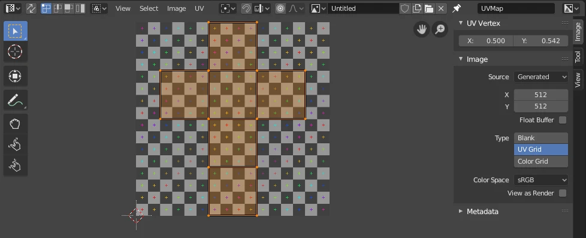
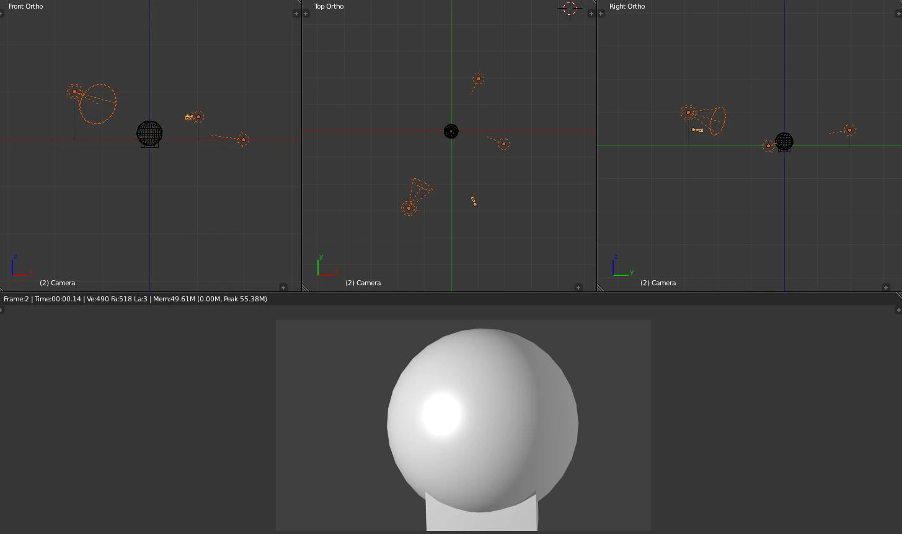

The color
Base Color
The surface's raw color, or an Image Texture node plugged into this input.
Shading & Lighting · 55–70 minutes · Grades 7–12
Every object you've built so far is still the default gray. This lesson unwraps a surface, builds a real material, lights it on purpose, and renders a finished image — the pathway's capstone skill.
Finish line: one of your pathway objects, unwrapped, materialed, lit, and rendered to a saved image file.
F12 renders exactly what the active camera sees — not the editor viewport.
UVs
Unfold the surface
Every mesh face needs a matching 2D location in a flat "UV" layout before an image texture can wrap around it correctly. Think of it like unfolding a cardboard box flat before printing a design on it.
In Edit Mode, select edges where the unfold should split — like the inside seam of a sleeve — and press Ctrl+E → Mark Seam.
Select all (A) and press U → Unwrap. Open a UV Editing workspace tab to see the flattened result.
In the UV Editor, enable a checker texture overlay — even, undistorted squares mean a healthy unwrap; stretched squares mean the seams need adjusting.

Material
One node covers most materials
Every new material starts with a Principled BSDF node in the Shading workspace — a single node that can represent plastic, metal, wood, skin, or glass just by changing its inputs.
The color
The surface's raw color, or an Image Texture node plugged into this input.
Shiny vs. matte
0 is a mirror, 1 is chalk-matte. Most real-world materials sit between 0.3 and 0.7.
Metal or not
0 for wood, fabric, or plastic. 1 for bare metal. Rarely anything in between.
In the Shading workspace, press Shift+A → Texture → Image Texture, load an image, then drag a connection from its Color output to the Principled BSDF's Base Color input.
Light
Direction sells the shape
One light straight-on flattens a form. A simple three-point setup reads as intentional: a strong key light, a softer fill from the opposite side, and an optional rim light to separate the subject from its background.
Your main light, angled 30–45° from the camera. This defines the primary shadows.
A dimmer light from the opposite side, softening the shadows the key light creates.
A light from behind the subject, catching its edge to separate it from the background.

Render
Turn the scene into an image
Fast, real-time
Rasterized rendering — near-instant feedback, great for classroom iteration and game-style lighting.
Slower, physically accurate
Path-traced light simulation — more realistic reflections and shadows, at a real time cost per image.
Select the Camera object, use Numpad 0 to look through it, and press Ctrl+Numpad 0 from any view to snap the camera there instead.
Press F12. Blender opens an Image Viewer window with the final render.
In the Image Viewer, Image → Save As, and choose PNG for a lossless result.
Build
Hands on
Your Lesson 03 chair or Lesson 06 tool works well — something with a few clear surfaces.
Mark a few sensible seams, then U → Unwrap, and check the result with a checker overlay.
Set Base Color, Roughness, and Metallic to match the real material — wood, painted metal, or plastic.
Add a key and fill light, and raise the World strength slightly.
Position the camera, press F12, and save the result as a PNG next to your .blend file.
Check